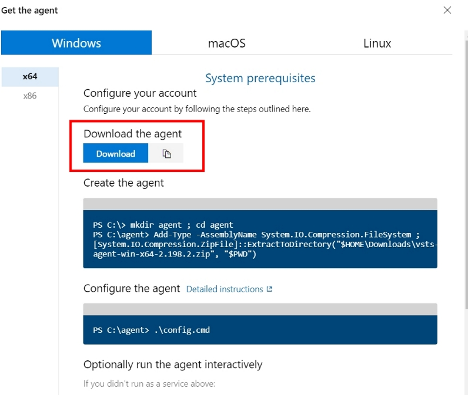

Azure Pipelines 設置Self-hosted Windows代理程式
2022-02-01 11:20:00
2022-02-01 11:20:00
注意事項：
- 需要確認裝載電腦環境是否有運作必要套件，Ex：執行Asp.Net.Core範本就需要安裝Dotnet SDK。
- 需要設定PAT(Personal Access Tokens)許可權證，讓Self-hosted Agent能夠與遠端連線操作。
- 如果需要重新配置Agent代理程式，需要刪除掉原始配置，才能在進行配置操作。 (參考4)
- 開啟
PowerShell執行操作指令。
Step 1. 新增PAT(Personal Access Tokens)許可權證
新增完畢產生Token會用在後面初次設定Agent程式。
Step 2. 下載Agent程式
-
Organization settings– > 選取Agent pools–> 點擊Add pool按鈕 -
Pool Type選擇Self-hosted，自訂Name內容設定該Agent集區名稱。

- 點進建立自訂Agent集區內，選取
Agents區塊 –> 點擊New agent
- 選擇
Windows–>Download the agent–> 點擊Download按鈕

Step 3. 建立Agent程式存放目錄與解壓縮
此筆記在PowerShell進行操作，也可手動進行建置存放目錄與解壓縮至指定目錄。
- 在
C:\底下操作指令，建立存放目錄並切換至該目錄底下mkdir agent ; cd agent - 將下載Agent程式壓縮檔解壓縮至
C:\agentAdd-Type -AssemblyName System.IO.Compression.FileSystem ; [System.IO.Compression.ZipFile]::ExtractToDirectory("$HOME\Downloads\vsts-agent-win-x64-2.198.2.zip", "$PWD")- 此筆記下載壓縮檔名稱為
vsts-agent-win-x64-2.198.2.zip，每一次下載可能都會不一樣，需再注意壓縮檔案名稱。
- 此筆記下載壓縮檔名稱為
Step 4. 設定Agent程式(初次執行前須設置一次此步驟)
PowerShell需再Agent程式放置目錄位置底下。
- 執行設定指令：
.\config.cmd - 設定伺服器 URL
- 預設格式：https://dev.azure.com/
{your-organization} {your-organization}輸入自己組織名稱
- 預設格式：https://dev.azure.com/
- 在
PwoerShell執行指令期間進行以下設定- 預設使用PAT權杖驗證(輸入視窗會提示
請為 PAT 按 Enter) - 輸入建置PAT Token
- 輸入代理程式集區(Agent Tool內設定集區名稱)
- 輸入代理程式名稱(自訂命名)
- 輸入工作資料夾(輸入視窗會提示
請為 _work 按 Enter) - 輸入將代理程式作為服務執行? (Y/N)
- 如果不需要請按下Enter，輸入視窗會提示
請為 否 按 Enter
- 如果不需要請按下Enter，輸入視窗會提示
- 輸入設定自動登入並在啟動時執行代理程式? (Y/N)
- 如果不需要請按下Enter，輸入視窗會提示
請為 否 按 Enter
- 如果不需要請按下Enter，輸入視窗會提示
- 預設使用PAT權杖驗證(輸入視窗會提示

Step 5. 執行Agent代理程式
PowerShell需再Agent程式放置目錄位置底下。
- 執行設定指令：
.\run.cmd - 如果要終止程式，按下Ctrl + C即可。
可在Agent Tool集區內檢視目前Agent程式是否有在運作中。